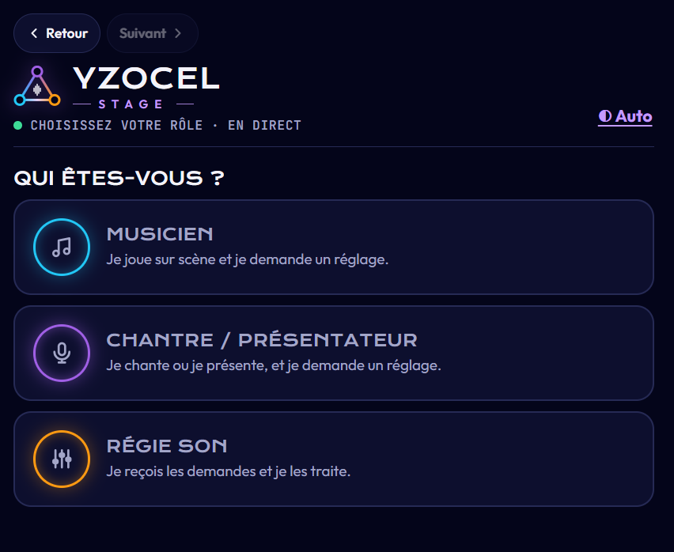

YZOCEL Stage
Un prototype de communication pensé pour coordonner trois pôles d’une équipe musicale : musiciens, chantres et régie son.

Le constat
Pendant un culte ou un concert, un musicien qui n’entend plus son instrument dans son retour n’a souvent que deux options : faire des signes vers la régie ou interrompre son jeu. De son côté, le technicien, placé au fond de la salle, reçoit des demandes imprécises, parfois plusieurs en même temps, sans savoir laquelle traiter en premier ni si le problème est réglé.
J’ai vécu ces situations en tant que sonorisateur. YZOCEL Stage est né de ce terrain : remplacer les gestes approximatifs par des demandes claires, envoyées en quelques secondes et suivies jusqu’à leur résolution.
Les solutions actuelles et leurs limites
Sur le terrain, la communication entre la scène et la régie repose aujourd’hui sur quelques moyens, chacun avec ses défauts :
- Les gestes : rapides, mais ambigus. Un doigt pointé vers le haut peut vouloir dire « plus de moi », « plus de retour » ou « plus de voix », et le technicien doit regarder la scène au bon moment pour les voir.
- La parole entre deux morceaux : possible lors des répétitions, beaucoup moins pendant un culte ou un concert, où chaque interruption se voit et s’entend.
- Les messageries instantanées : précises, mais non structurées. Les messages se mélangent aux conversations, rien n’indique s’ils ont été traités, et la régie doit interpréter chaque formulation.
- Les systèmes d’intercom : efficaces pour les équipes techniques, mais coûteux et peu adaptés aux musiciens, qui ont les mains prises et un casque déjà occupé par leur retour.
YZOCEL Stage cherche à garder la rapidité du geste et la précision du message écrit, tout en ajoutant ce qui manque à toutes ces solutions : un suivi clair de chaque demande, de son envoi à sa résolution.
Trois rôles, une même équipe
Musicien
Je joue sur scène et je demande un réglage : mon instrument, mon retour, ou une intervention.
Chantre / présentateur
Je chante ou je présente, et je signale un besoin sans quitter la scène.
Régie son
Je reçois toutes les demandes en direct, je les priorise et je les traite.
Le nom et l’identité visuelle reprennent cette idée : un triangle isocèle reliant les trois pôles, avec la circulation des messages entre eux.
Le parcours d’une demande
1. Choisir l’instrument
Claviers, séquences harmoniques et rythmiques, orgue, guitares, basse, batterie, saxophone ou autre source : chaque instrument a sa couleur.
2. Préciser le retour
Le musicien peut indiquer le retour casque concerné (claviers, batterie, basse, guitares, directeur musical, sax). Cette étape reste facultative.
3. Formuler le besoin
Une demande prédéfinie, une description libre (« je n’entends plus le piano dans mon retour ») ou une demande d’intervention d’un technicien sur le plateau.
4. Suivre jusqu’à la résolution
La régie voit la demande arriver, horodatée et associée au rôle. Elle la signale comme résolue, puis la scène valide : la demande passe alors en « terminée ».
Un exemple concret
Pendant un culte, le guitariste n’entend plus correctement son instrument. Sans quitter sa place, il ouvre YZOCEL Stage, sélectionne « Guitare 1 » et demande une intervention sur le plateau. Il peut ajouter une précision en quelques mots. La demande part à 13 h 21.
À la régie, elle apparaît immédiatement dans la colonne « À traiter », avec l’instrument, l’heure, le rôle de l’émetteur et un code couleur. Le technicien sait qui demande quoi, sans avoir à interpréter un geste. Une fois le problème réglé, il la signale comme résolue. Elle passe alors « en attente de validation » : c’est le guitariste qui confirme, de son côté, que tout fonctionne. La demande est ensuite classée parmi les demandes terminées.
À aucun moment le musicien n’a eu à interrompre son jeu, ni le technicien à quitter sa console pour comprendre le besoin.
Mes choix de conception
- Rapidité : une demande s’envoie en quelques touches, avec des raccourcis pour les demandes fréquentes et la possibilité d’annuler.
- Lisibilité dans le feu de l’action : code couleur par instrument, gros boutons, statuts visibles (à traiter, résolue en attente de validation, terminée).
- Boucle de validation : un problème n’est clos que lorsque la scène confirme qu’il est réglé, ce qui évite les malentendus entre la scène et la régie.
- Adapté à la régie : un espace « Préparer la scène » et la configuration du matériel utilisé, par exemple une console Yamaha CL5 et Ableton Live.
- Adapté aux salles sombres : thèmes sombre, clair ou automatique, pour rester lisible sans éblouir.
Les contraintes du direct
Concevoir pour une situation en direct impose des contraintes très différentes d’une application classique :
- Peu de temps et peu d’attention : le musicien joue en même temps. Chaque demande doit pouvoir s’envoyer en quelques secondes, sans saisie obligatoire.
- Un environnement sombre et bruyant : l’interface doit rester lisible dans la pénombre d’une salle, sans éclairer la scène, d’où les contrastes forts et le thème sombre.
- Plusieurs demandes en même temps : la régie doit pouvoir les distinguer et les prioriser d’un coup d’œil, d’où le code couleur par instrument et les statuts.
- Un vocabulaire commun : musiciens et techniciens ne décrivent pas toujours un problème avec les mêmes mots. Les choix proposés (instrument, retour, type de demande) servent de langage partagé, complété par une description libre si besoin.
Une approche structurée par la donnée
Derrière l’interface, chaque demande est une donnée structurée : qui la fait (rôle), pour quelle source (instrument), sur quel retour, de quel type, à quelle heure, et dans quel état (à traiter, résolue, terminée). C’est cette structure qui permet à la régie de trier et de prioriser, plutôt que de lire des messages libres.
On retrouve ici la logique de mon métier de Data Analyst : définir les bonnes catégories dès la conception rend l’information exploitable. Cette structure ouvre aussi la voie à des usages futurs, comme l’identification des problèmes les plus fréquents d’un service à l’autre pour mieux préparer la balance.
Ce que ce projet mobilise
YZOCEL Stage croise ma connaissance du terrain, la sonorisation et le travail avec les musiciens, avec une démarche de conception produit : analyse des besoins de trois profils d’utilisateurs, structuration des demandes en catégories et en statuts, parcours utilisateurs et prototypage.
Mon travail
- Identification des trois groupes d’utilisateurs et de leurs besoins de communication.
- Réflexion sur les parcours d’usage et les interactions entre les trois pôles.
- Conception d’une identité visuelle fondée sur le triangle isocèle et la circulation des messages.
- Prototypage des écrans de sélection de rôle, d’envoi de demandes et de traitement côté régie.
- Développement assisté par IA avec Claude Code : je conçois les fonctionnalités, je pilote la génération du code, puis je teste et ajuste.
Petit lexique
- Régie son : le poste du technicien, généralement en salle, où se trouve la console de mixage.
- Retour : le son que chaque musicien entend pour jouer, souvent dans un casque, distinct de ce qu’entend le public.
- Façade : le son diffusé vers le public.
- Plateau : la scène et son matériel (instruments, câbles, micros).
- Séquence : une piste préenregistrée (harmonique ou rythmique) jouée en même temps que les musiciens, par exemple depuis Ableton Live.
Galerie & démonstrations
Captures du prototype d’interface : sélection des rôles, réglages demandés depuis la scène et suivi des interventions côté régie.

